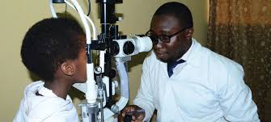
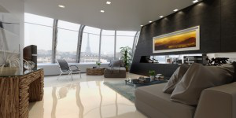
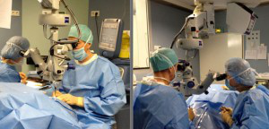

Forts d’une expérience réussie dans le domaine des services aux personnes, via la société sœur GIRCARW.Assistance LTD, l’idée d’élargir leurs services aux personnes souffrantes apparait comme une nécessité, voire une urgence.
En particulier, GIRCARW.Assistance LTD s’attelle à réaliser des prestations sur mesure, pour le plus grand confort de ses patients.Spécialisation
Fort d'une experience, X est spécialisée en assistance intégrée via la gestion des cas d’évacuations sanitaires vers le Rwanda ainsi que dans la gestion de l’étudiant expatrié au Rwanda.
Notre localisation
GIRCARW.Assistance LTD est basée à Kigali au Rwanda et détient une filiale basée à Bangui en République Centrafricaine, tout en ayant en objectif de s’étendre davantage dans les pays africains.
Adaptive et évolutive
Notre entreprise est dynamique et s'adapte constamment aux évolutions du monde des affaires et de la société.
L’écoute, le soutien, le suivi, le conseil et l'orientation des personnes en fonction de leurs demandes et de leurs besoins font partie de notre stratégie pour assurer notre mission.
Notre travail repose sur la notion de relation d'aide et sur une méthode précise permettant de recueillir les données nécessaires à la compréhension de toute situation,de l'analyser,d’établir un plan d'action et d’évaluer les résultats de ses interventions dans le but d'apporter une amélioration des bonnes conditions de vie de la population selon leur localité.
Le concept nait d’un constat simple: pour les malades étrangers désireux de venir se faire soigner dans un pays sûr, surtout en cette période de pandémie liée au Covid19, l’organisation d’une évacuation sanitaire relève d’un parcours du combattant : délais de réponse des hôpitaux considérables, tarifs exorbitants, difficultés d’organisation, blocages dans l’obtention de visas, etc.
Séjours Médicaux et évacuations sanitaires
Avant le séjour médical / l’évacuation sanitaire
- Réception et étude du dossier médical
- Contact des hôpitaux et professeurs spécialisés
- Demande de parcours de soins et de devis personnalisé
- Mise en jeu de la concurrence
- Contact des prestataires connexes (hôtels, centres de réadaptation…) et négociation de tarifs compétitifs
- Soins post-opératoires et centres de rééducation
- Nombreuses prestations connexes sur option: aide au repas, aide ménagère, ccompagnement hors hospitalisation, loisirs, etc.
Soins infirmiers; Kinésithérapie; Médicamentation; Hébergement; Transport; Alimentation; etc.
E-Consultation
Obtenez à distance un avis médical et des réponses fiables. N’attendez plus, grâce à notre service d’e-consultation vous pouvez désormais nous contacter et nous faire parvenir des documents qui seront transmis le plus rapidement possible à nos meilleurs spécialistes français.
Autres prestations
- Vous souhaitez venir accoucher dans un pays sûr?
- Vous n’arrivez pas à avoir d’enfant et vous souhaitez être assisté par les plus grands experts de la planète?
- On vient de vous diagnostiquer une maladie importante et vous souhaiteriez un second avis d’expert?
- Vous apprenez que vous avez un cancer et souhaitez être prise en charge intégrale au Rwanda par les meilleurs spécialistes ?
Hébergement
Parce que le bon déroulement d’un séjour médical en France ou d’une évacuation sanitaire rime avec le confort optimal des patients et la réponse à leurs exigences, GIRCARW.Assistance LTD a mis en place 3 solutions adaptées aux situations et profils des patients.
Hébergement en hôtel
La solution de l’hébergement en hôtel des patients bénéficiant venant se faire soigner au Rwanda ou bénéficiant d’une évacuation sanitaire est généralement réservée aux cas suivants:
- Demande particulière du patient, ou situation spécifique du patient justifiant le recours à l’hébergement en hôtel
- Pleine capacité (saturation) d’hébergement en Résidence ou en appartements parisiens
- Nécessité de localiser le patient à proximité d’une structure médicale spécifique ou en province.
Tourisme médical

Le terme de « tourisme médical » recouvre des réalités diverses. Une personne est « touriste médical » si elle voyage pour recevoir des soins programmés.
On considère ici que la notion englobe tant les soins dits de confort ou esthétiques, associés parfois à des visites touristiques, que les prises en charge de pathologies lourdes.
L'un des meilleurs systèmes de soins au monde
L’une des premières destinations touristiques du monde

Student Assistance
Student Assistance
GIRCARW.Assistance LTD Student Assistance est actuellement positionnée comme un produit de gestion de l’étudiant international, établissant continuellement des partenariats avec des établissements d’enseignement supérieur, des gouvernements africains, des partenaires commerciaux du secteur privé et des communautés d’étudiants internationaux. Le business unit se veut durable par la réalisation de ses bénéfices.
«GIRCARW.Assistance LTD» – La vision à moyen terme de l’International Student Assistance est de soutenir ses intérêts commerciaux au Rwanda et en Centrafrique tout en en établissant de nouveaux poles dans le reste de l’Afrique.
«GIRCARW.Assistance LTD» – a la vision à long terme de l’assistance aux étudiants internationaux d’étendre ses activités clés à tous les pays africains tout en contribuant activement à l’édification de la nation de ces pays en aidant leurs universités africaines à produire une qualité supérieure d’étudiants internationaux qui reconstruiront activement leurs économies.
Le tourisme
Voulez-vous attirer de nouveaux visiteurs au Rwanda ? À l'ère du numérique, il est beaucoup plus facile d'attirer l'attention des touristes sur un lieu spécifique.
Élaborez un plan markéting et utilisez les réseaux sociaux et d'autres matériels publicitaires afin de promouvoir le tourisme dans votre ville.
- Créer un plan de marketing. Pensez à ce qui rend votre ville unique.
- Menez une enquête auprès des touristes
- Créer un plan de marketing. Identifiez les segments marketing cibles.
- Créez un slogan unique.
- Créez du matériel promotionnel.
- Créez une carte touristique.
- Voulez-vous en savoir plus? Discutons!